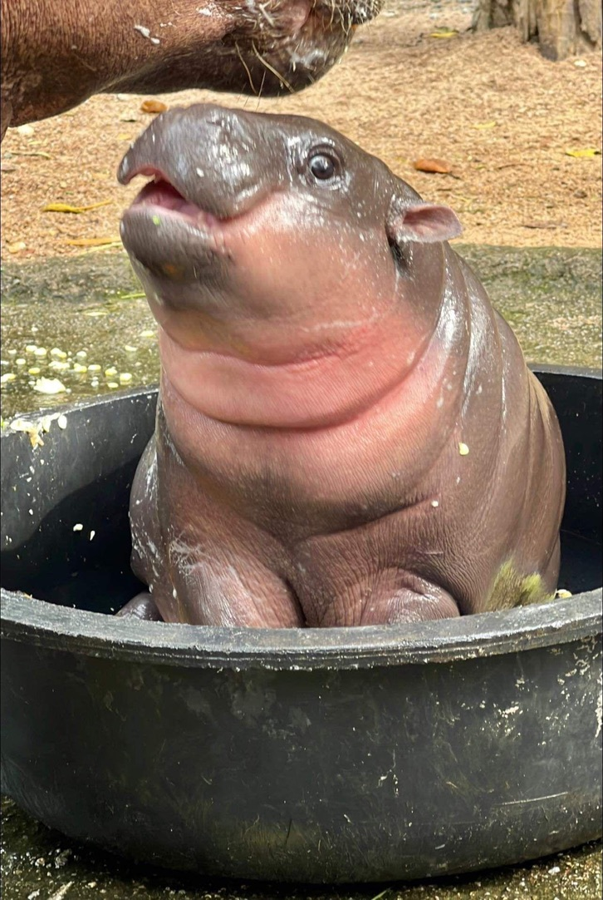

I am Phumrapee Boonklang. Note: This is normal text.
I am Phumrapee Boonklang. Note: This is bold.
I am Phumrapee Boonklang. Note: This is also bold.
I work at Wellcome Sanger Institute. Note: This is italic.
I work at Wellcome Sanger Institute. Note: This is also italic.
1012
beta1
This is wrong
I am Phumrapee Boonklang [^1].
I work at Wellcome Sanger Institute. Note: This won’t give you the empty line.
I am Phumrapee Boonklang.
I work at Wellcome Sanger Institute. Note: This won’t give you the empty
line.
Internal links Go to Heading
Note: this contains 3 parts: 1. [] to denote the text 2. () is the link. 3. {} is where the link is referring to.
External links Link Sanger
Note: this contains 2 parts: 1. [], 2. ()
Note: Footnotes contain 2 parts: 1. [^1] in the text body, 2. [^1]: for description [^1]: aka Phum.
Syntax is similar to that of links.
 ## Tables
This is rarely used, as usually you would read in a df.
| Column 1 | Column 2 |
|---|---|
| Row1 Col1 | Row1 Col2 |
| Row2 Col1 | Row2 Col2 |
plot(1:100)
hist(rnorm(1000))see the ‘output’ setting at the top of this markdown
output:
html_document:
toc: TRUE
toc_float: TRUEThe references have to be in the .bib files
---
title: "My first notebook"
author: Alexia Cardona
date: 18 February 2020
bibliography: references.bib
link-citations: yes